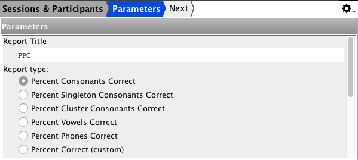
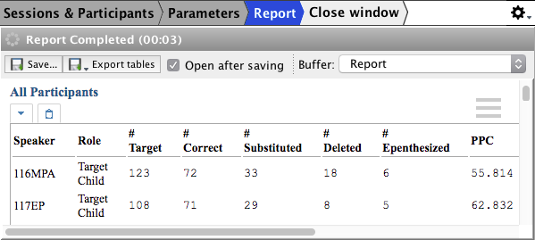

Built-in Analyses
Analyses built into Phon offer ready access to general results about different aspects of phonological behaviours at a click. Currently-supported analyses include:
Consonants: a series of analyses on phonological patterns affecting consonants and consonant clusters within words, based on systematic comparisons between IPA Target and IPA Actual pairs of transcribed forms.
Percent Phones Correct (PPC): Series of algorithms to extract percentages of consonants and vowels correct (e.g. Shriberg et al., 1997; Shriberg & Kwiatkowski, 1982), including at the level of consonant clusters.
Phone Inventory: List of phones in IPA Target and IPA Actual tiers with their frequency counts
PMLU (Phonological Mean Length of Utterance): Algorithm to calculate phonological complexity originally developed by Ingram (2002), with an alternate version proposed by Arias & Lleó (2013).
Word Inventory: List of words in the Orthography tier with their frequency counts
Phonological processes: Algorithms to detect general phonological processes such as velar fronting, fricative stopping, liquid gliding, or consonant deletion.
Specialized analyses: More narrowly specialized analyses of multisyllabic word productions (Multisyllabic Non-linear Analysis, Mason 2015; Word-level Analysis of Polysyllables, Masso 2016), the Word Match analysis (Bernhardt XXXX) and the Vocalization analysis (Velleman XXXX).
The key difference between the query and reporting methods described in Query & Report wizard and built-in analyses is that the latter combine analysis methods and reports at once. Running an analysis follows a three-step logic, as Phon guides the user through the steps laid out in the breadcrumb on top of the interface.
As with query and reporting, the user can save the report as a standalone HTML file or exported them in text-only (CSV) and Excel formats.
Example (PPC analysis)
Select Sessions and Participants
Figure 1. Select Sessions and Participants 
Analysis Parameters
Figure 2. Analysis Parameters

Analysis Results
Figure 3. Analysis Results
